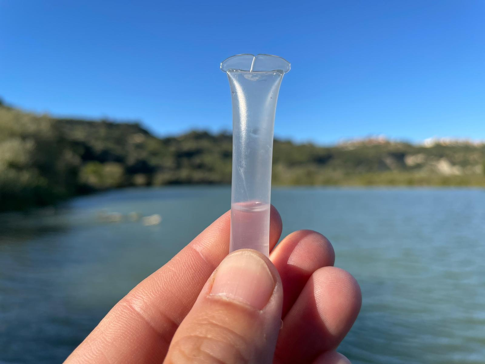

Fosfati
Cosa sono i fosfati?
Così come l’azoto, il fosforo (P) è un nutriente essenziale per gli organismi autotrofi, in natura la forma inorganica si trova principalmente nelle rocce fosfatiche (rocce di origine organica che derivano dall’accumulo di ossa e escrementi) oppure in forma particellata adsorbio al sedimento o al suolo. Per questo motivo lo spostamento del fosforo avviene quando c’è erosione del suolo o movimentazione dei sedimenti.
L’adsorbimento è un processo in cui una sostanza, che può essere in fase liquida o gassosa, si accumula sulla superficie di un solido. Al contrario dell’assorbimento in cui la sostanza entra all’interno nell’adsorbimento la sostanza si ferma sulla superficie grazie ad interazioni elettriche.
Strumenti da utilizzare per il monitoraggio
Kit di Fresh Water Watch
Per svolgere la misura A Sud utilizza i kit di Fresh Water Watch che comprendono provette contenenti dei reagenti, che a contatto con l’acqua cambia colore in base alla concentrazione di fosfati. Nel kit è inclusa anche una scala colorimetrica per poter risalire al dato relativo alla concentrazione di fosfati nell’acqua.
Procedimento
Prendere la cuvetta e riempirla d’acqua. Risciacquare la cuvetta per tre volte. La quarta volta prendere l’acqua fino al livello segnato sulla cuvetta. Prendere il contenitore del reagente, rimuovere la linguette verde fluorescente e premere di modo da far uscire l’aria. Inserire il contenitore del reagente (sempre tenendo premuto) capovolto all’interno della cuvetta con l’acqua. Una volta inserito, rilasciare la pressione in modo da far entrare l’acqua. Scuotere la provetta. Aspettare 5 minuti
Comparare il colore della soluzione contenuta nel contenitore con i colori di riferimento alla scala colorimetrica presente all’interno del kit.

Quali rischi sono associati a valori alti di fosfati
L’inquinamento da fosfati nelle acque superficiali è direttamente collegato agli scarichi di depurazione non trattati e ai fertilizzanti agricoli. Il fosfato, come l’azoto, è un importante composto dei fertilizzanti utilizzati nei campi coltivati che però presenta dinamiche di movimento nel bacino molto diverse dall’azoto. Si sposta soprattutto assorbito dalle particelle minerali del suolo e quindi è associato all’erosione superficiale dei terreni dovuta al cosiddetto run off, ovvero i fenomeni di deflusso superficiale o dilavamento.
Per tale ragione, eccessive concentrazioni di fosfati possono essere causate dall’attività antropica: dispersione di detergenti/detersivi, concimi/fertilizzanti, integratori alimentari, antiparassitari, e più in generale scarichi urbani o industriali. La loro presenza, specie se in misura eccessiva, può portare al fenomeno dell’eutrofizzazione. Non sono stabiliti limiti massimi tuttavia il contenuto di fosforo (direttamente proporzionale a quello dei fosfati) è uno dei 4 parametri che vengono misurati nel LIMeco (Livello di Inquinamento dai Macrodescrittori per lo stato ecologico).